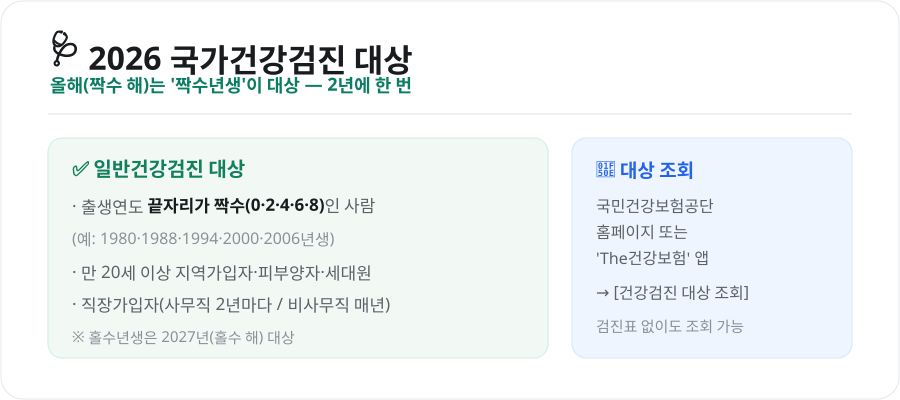
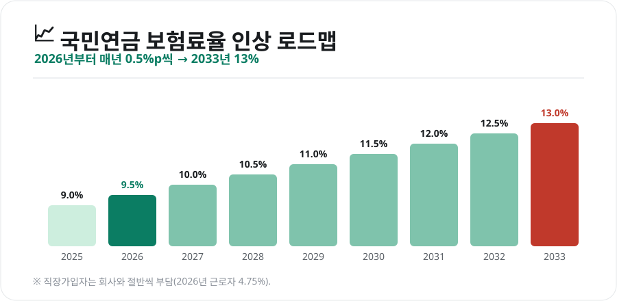
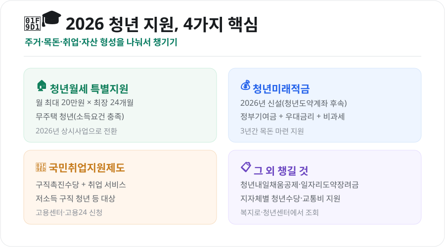
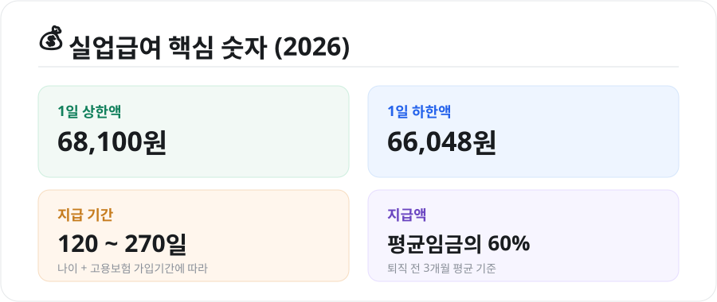
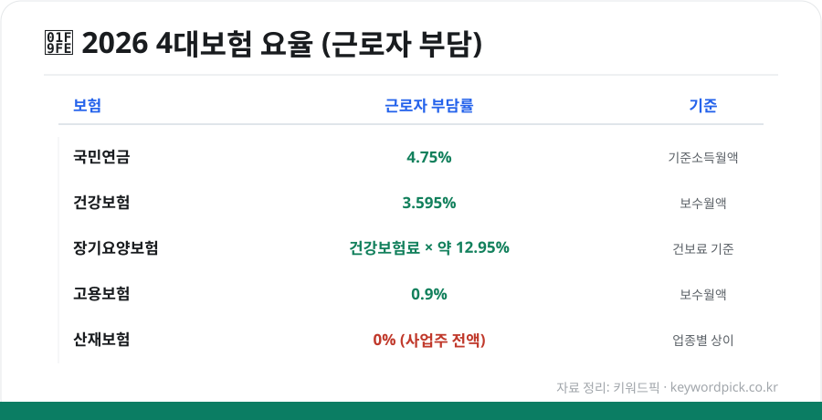
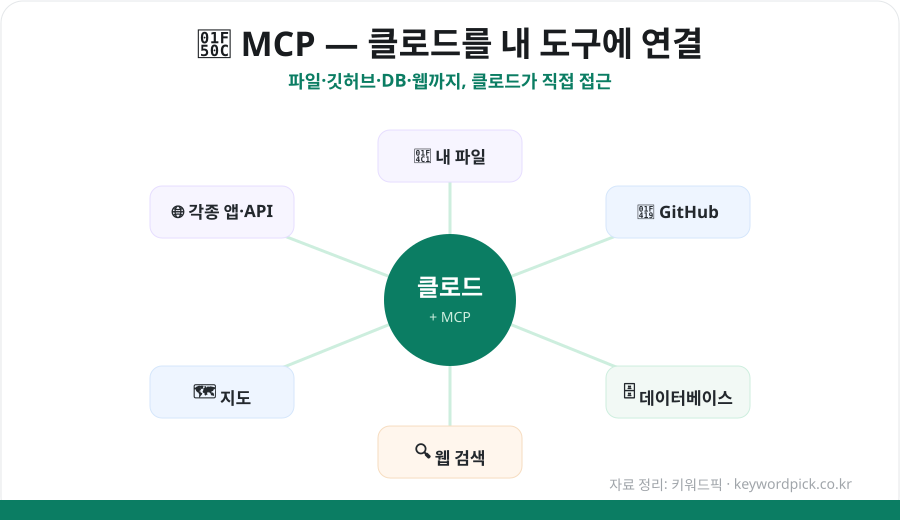
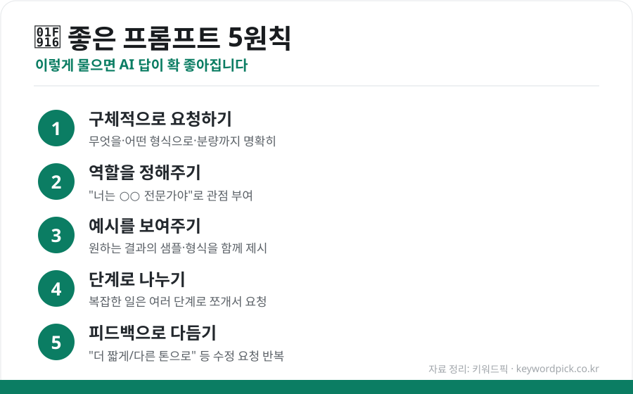
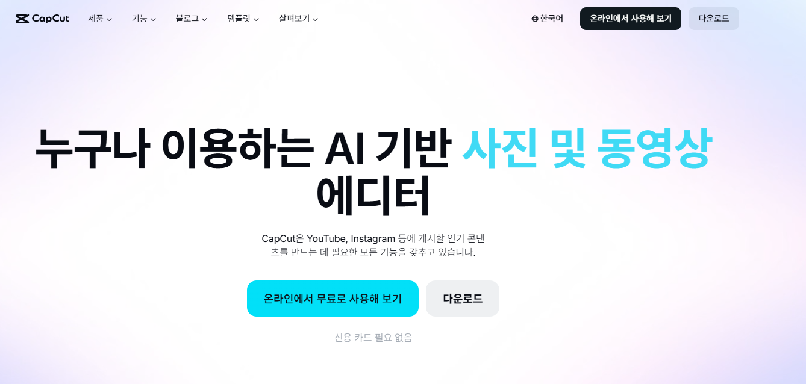
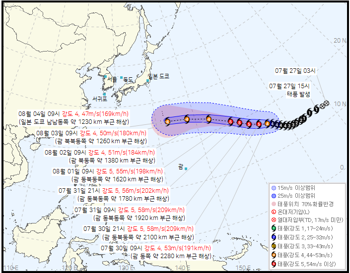
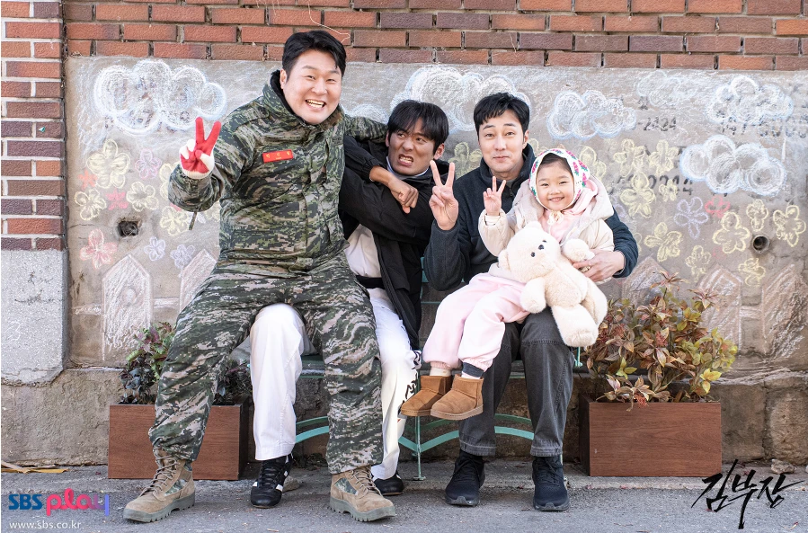

블로그
실시간 인기 검색어를 소재로 직접 쓴 글
광고 · 반응형
 생활연말정산 완벽 가이드 — 소득공제·세액공제 차이부터 놓치기 쉬운 공제까지2026-08-03 · 연말정산'13월의 월급' 연말정산, 소득공제와 세액공제의 차이, 일정, 신용카드·연금계좌·의료비·월세 등 놓치기 쉬운 주요 공제를 초보자도 이해하도록 정리했습니다.
생활연말정산 완벽 가이드 — 소득공제·세액공제 차이부터 놓치기 쉬운 공제까지2026-08-03 · 연말정산'13월의 월급' 연말정산, 소득공제와 세액공제의 차이, 일정, 신용카드·연금계좌·의료비·월세 등 놓치기 쉬운 주요 공제를 초보자도 이해하도록 정리했습니다. 생활근로장려금 총정리 (2026) — 가구별 소득기준·최대 지급액·신청 방법2026-08-03 · 근로장려금근로장려금 2026년 가구 유형별 소득기준(단독 2,200만·홑벌이 3,200만·맞벌이 4,400만)과 최대 지급액(165·285·330만원), 재산 요건, 정기신청 일정·지급일까지 한눈에 정리했습니다.
생활근로장려금 총정리 (2026) — 가구별 소득기준·최대 지급액·신청 방법2026-08-03 · 근로장려금근로장려금 2026년 가구 유형별 소득기준(단독 2,200만·홑벌이 3,200만·맞벌이 4,400만)과 최대 지급액(165·285·330만원), 재산 요건, 정기신청 일정·지급일까지 한눈에 정리했습니다. 생활자동차세 연납 총정리 (2026) — 1월 5% 할인·신청 방법·시기별 공제율2026-08-03 · 자동차세 연납자동차세를 1년치 미리 내면 세액을 깎아주는 연납 제도. 2026년 1월 신청 시 5% 공제, 분기별 할인율 차이, 위택스·앱·ARS 신청 방법과 주의점을 정리했습니다.
생활자동차세 연납 총정리 (2026) — 1월 5% 할인·신청 방법·시기별 공제율2026-08-03 · 자동차세 연납자동차세를 1년치 미리 내면 세액을 깎아주는 연납 제도. 2026년 1월 신청 시 5% 공제, 분기별 할인율 차이, 위택스·앱·ARS 신청 방법과 주의점을 정리했습니다. 생활전기차 보조금 총정리 (2026) — 차값별 국고보조금·추가지원·신청 방법2026-08-03 · 전기차 보조금2026년 전기차 보조금을 차량 가격 구간별 국고보조금(5,300만원 미만 100%), 전환지원금·다자녀·지자체 합산까지 한눈에 정리했습니다. 신청 방법과 선착순 마감 주의점도 담았습니다.
생활전기차 보조금 총정리 (2026) — 차값별 국고보조금·추가지원·신청 방법2026-08-03 · 전기차 보조금2026년 전기차 보조금을 차량 가격 구간별 국고보조금(5,300만원 미만 100%), 전환지원금·다자녀·지자체 합산까지 한눈에 정리했습니다. 신청 방법과 선착순 마감 주의점도 담았습니다. 생활국가장학금 신청 총정리 (2026) — 소득분위별 지원금·신청 기간·성적 기준2026-08-03 · 국가장학금 신청2026년 국가장학금 1유형 소득분위(학자금 지원구간)별 지원금액, 신청 기간(학기별), 성적 기준, 신청 절차를 한눈에 정리했습니다. 가구원·금융정보 동의까지 놓치지 마세요.
생활국가장학금 신청 총정리 (2026) — 소득분위별 지원금·신청 기간·성적 기준2026-08-03 · 국가장학금 신청2026년 국가장학금 1유형 소득분위(학자금 지원구간)별 지원금액, 신청 기간(학기별), 성적 기준, 신청 절차를 한눈에 정리했습니다. 가구원·금융정보 동의까지 놓치지 마세요. 생활청년내일저축계좌 총정리 (2026) — 자격·정부지원금·3년 1,440만원 만들기2026-08-03 · 청년내일저축계좌청년내일저축계좌는 월 10만원을 저축하면 정부가 최대 30만원을 얹어줘 3년 뒤 약 1,440만원을 만드는 자산형성 지원 사업입니다. 2026년 가입 자격·소득 요건·신청 방법을 정리했습니다.
생활청년내일저축계좌 총정리 (2026) — 자격·정부지원금·3년 1,440만원 만들기2026-08-03 · 청년내일저축계좌청년내일저축계좌는 월 10만원을 저축하면 정부가 최대 30만원을 얹어줘 3년 뒤 약 1,440만원을 만드는 자산형성 지원 사업입니다. 2026년 가입 자격·소득 요건·신청 방법을 정리했습니다. 생활광복절 대체휴무(8월 17일), 진짜 쉬나요? — 대체공휴일 대상·휴일수당 정리2026-08-03 · 광복절 대체휴무2026년 광복절(8월 15일 토)이 토요일과 겹쳐 8월 17일(월)이 대체공휴일입니다. 대체휴무가 왜 생기는지, 누가 쉬는지(5인 이상·미만), 이날 일하면 받는 휴일근로수당까지 정리했습니다.
생활광복절 대체휴무(8월 17일), 진짜 쉬나요? — 대체공휴일 대상·휴일수당 정리2026-08-03 · 광복절 대체휴무2026년 광복절(8월 15일 토)이 토요일과 겹쳐 8월 17일(월)이 대체공휴일입니다. 대체휴무가 왜 생기는지, 누가 쉬는지(5인 이상·미만), 이날 일하면 받는 휴일근로수당까지 정리했습니다.
생활국가건강검진 대상 조회 (2026) — 짝수년생 대상·6대 암검진·조회 방법 총정리2026-08-03 · 건강검진 대상조회2026년 국가건강검진은 짝수년생이 대상입니다. 일반건강검진 대상·조회 방법(The건강보험 앱), 6대 암검진 나이·주기, 비용과 미수검 시 주의점까지 한눈에 정리했습니다. 생활정부24 민원 발급 총정리 (2026) — 무료 인터넷 발급·발급 서류·무인발급기 사용법2026-08-03 · 정부24 민원발급정부24(gov.kr)에서 주민등록등본·건축물대장·납세증명 등을 무료로 인터넷 발급하는 방법, 발급 가능한 서류, 무인민원발급기·방문 발급 비교, 그리고 가족관계증명서 발급처까지 정리했습니다.
생활정부24 민원 발급 총정리 (2026) — 무료 인터넷 발급·발급 서류·무인발급기 사용법2026-08-03 · 정부24 민원발급정부24(gov.kr)에서 주민등록등본·건축물대장·납세증명 등을 무료로 인터넷 발급하는 방법, 발급 가능한 서류, 무인민원발급기·방문 발급 비교, 그리고 가족관계증명서 발급처까지 정리했습니다.
생활국민연금 총정리 (2026) — 보험료율 9.5% 인상·수급 나이·예상연금 조회2026-08-03 · 국민연금2026년부터 국민연금 보험료율이 9%에서 9.5%로 오릅니다. 인상 로드맵(2033년 13%), 출생연도별 수급 개시 나이, 최소 가입기간, 예상연금 조회 방법까지 한 번에 정리했습니다.
생활2026 청년 지원금 총정리 — 월세·목돈·취업까지 놓치면 손해인 제도 모음2026-08-03 · 청년지원금2026년 청년이 챙길 수 있는 지원금을 주거·목돈·취업으로 나눠 정리했습니다. 청년월세 특별지원(월 20만원), 청년미래적금, 국민취업지원제도 등 핵심 제도와 신청처를 한눈에.
생활실업급여 총정리 (2026) — 수급 조건·신청 방법·지급액·기간 한눈에2026-08-03 · 실업급여2026년 실업급여(구직급여) 상한액 68,100원·하한액 66,048원, 수급 조건(피보험 180일·비자발적 이직), 신청 4단계, 지급 기간(120~270일)과 지급액 계산법까지 한 번에 정리했습니다. 생활광복절·2026 하반기 공휴일 총정리 — 대체공휴일·연휴 계산·태극기 다는 법2026-08-03 · 광복절8월 15일 광복절(토)과 대체공휴일 8월 17일(월)부터 추석·개천절·한글날·성탄절까지, 2026년 하반기 남은 공휴일과 연휴를 한눈에 정리했습니다. 태극기 다는 법도 함께 담았습니다.
생활광복절·2026 하반기 공휴일 총정리 — 대체공휴일·연휴 계산·태극기 다는 법2026-08-03 · 광복절8월 15일 광복절(토)과 대체공휴일 8월 17일(월)부터 추석·개천절·한글날·성탄절까지, 2026년 하반기 남은 공휴일과 연휴를 한눈에 정리했습니다. 태극기 다는 법도 함께 담았습니다. 생활수능 D-100 — 2027학년도 수능 일정과 남은 100일 공부 전략 총정리2026-08-03 · 수능2027학년도 수능은 2026년 11월 19일(목). 9월 모평·수시 원서접수·성적 통지 일정과, 남은 100일을 어떻게 써야 하는지 과목별·생활 관리 전략을 한눈에 정리했습니다.
생활수능 D-100 — 2027학년도 수능 일정과 남은 100일 공부 전략 총정리2026-08-03 · 수능2027학년도 수능은 2026년 11월 19일(목). 9월 모평·수시 원서접수·성적 통지 일정과, 남은 100일을 어떻게 써야 하는지 과목별·생활 관리 전략을 한눈에 정리했습니다. 생활전세사기 예방·대처 완전 가이드 (2026) — 계약 전 확인부터 당했을 때 대응까지2026-08-03 · 전세사기전세사기, 계약 전 등기부등본 확인·깡통전세 계산·집주인 세금 체납 확인부터 이사 당일 전입신고·확정일자, HUG 반환보증까지. 이미 당했을 때 대처 순서도 함께 정리했습니다.
생활전세사기 예방·대처 완전 가이드 (2026) — 계약 전 확인부터 당했을 때 대응까지2026-08-03 · 전세사기전세사기, 계약 전 등기부등본 확인·깡통전세 계산·집주인 세금 체납 확인부터 이사 당일 전입신고·확정일자, HUG 반환보증까지. 이미 당했을 때 대처 순서도 함께 정리했습니다.
생활4대보험 계산기 사용법 (2026) — 요율표·월급 공제액·실수령액 계산하기2026-08-03 · 4대보험계산기2026년 4대보험 요율(국민연금 9.5%·건강보험 7.19% 등)과 근로자 부담률, 월급에서 얼마가 빠지는지, 실수령액 계산 원리와 4대보험 계산기 사용법을 예시와 함께 정리했습니다. IT·과학ChatGPT 이미지 생성 사용법 — 무료 한도부터 잘 뽑는 프롬프트 팁까지2026-08-01 · ChatGPT 이미지 생성ChatGPT로 이미지를 만드는 법과 무료 한도, 그리고 원하는 그림을 잘 뽑는 프롬프트 팁을 정리했습니다. 초보자도 바로 따라 할 수 있습니다.
IT·과학ChatGPT 이미지 생성 사용법 — 무료 한도부터 잘 뽑는 프롬프트 팁까지2026-08-01 · ChatGPT 이미지 생성ChatGPT로 이미지를 만드는 법과 무료 한도, 그리고 원하는 그림을 잘 뽑는 프롬프트 팁을 정리했습니다. 초보자도 바로 따라 할 수 있습니다. IT·과학Notion AI 사용법 — 메모·문서 앱에서 AI로 일 처리하기 (기능·요금 총정리)2026-08-01 · Notion AI 사용법메모·문서 앱 노션에 붙은 Notion AI 사용법을 정리했습니다. 워크스페이스 질문답변, 글쓰기, DB 자동화, 에이전트 기능과 요금제까지 한 번에 확인하세요.
IT·과학Notion AI 사용법 — 메모·문서 앱에서 AI로 일 처리하기 (기능·요금 총정리)2026-08-01 · Notion AI 사용법메모·문서 앱 노션에 붙은 Notion AI 사용법을 정리했습니다. 워크스페이스 질문답변, 글쓰기, DB 자동화, 에이전트 기능과 요금제까지 한 번에 확인하세요. IT·과학퍼플렉시티(Perplexity) 사용법 — 출처까지 주는 AI 검색, 무료로 이렇게 쓴다2026-08-01 · 퍼플렉시티 사용법AI 검색엔진 퍼플렉시티(Perplexity) 사용법을 정리했습니다. 출처를 함께 주는 답변, 무료로 쓸 수 있는 범위, 요금제, 활용 팁까지 초보자도 이해하기 쉽게 담았습니다.
IT·과학퍼플렉시티(Perplexity) 사용법 — 출처까지 주는 AI 검색, 무료로 이렇게 쓴다2026-08-01 · 퍼플렉시티 사용법AI 검색엔진 퍼플렉시티(Perplexity) 사용법을 정리했습니다. 출처를 함께 주는 답변, 무료로 쓸 수 있는 범위, 요금제, 활용 팁까지 초보자도 이해하기 쉽게 담았습니다. IT·과학미드저니(Midjourney) 사용법 — 시작 4단계부터 요금제·상업 이용까지2026-08-01 · 미드저니 사용법고퀄리티 AI 이미지로 유명한 미드저니(Midjourney) 사용법을 정리했습니다. 웹에서 시작하는 4단계, 요금제, 상업적 이용, 초보 팁까지 담았습니다.
IT·과학미드저니(Midjourney) 사용법 — 시작 4단계부터 요금제·상업 이용까지2026-08-01 · 미드저니 사용법고퀄리티 AI 이미지로 유명한 미드저니(Midjourney) 사용법을 정리했습니다. 웹에서 시작하는 4단계, 요금제, 상업적 이용, 초보 팁까지 담았습니다. IT·과학런웨이(Runway) 사용법 — 사진을 영상으로, AI 영상 생성 Gen-4 가이드2026-08-01 · 런웨이 사용법AI 영상 생성 대표 도구 런웨이(Runway) 사용법을 정리했습니다. Gen-4 기능, 이미지를 영상으로 만드는 법, 요금제·크레딧, 초보 팁까지 담았습니다.
IT·과학런웨이(Runway) 사용법 — 사진을 영상으로, AI 영상 생성 Gen-4 가이드2026-08-01 · 런웨이 사용법AI 영상 생성 대표 도구 런웨이(Runway) 사용법을 정리했습니다. Gen-4 기능, 이미지를 영상으로 만드는 법, 요금제·크레딧, 초보 팁까지 담았습니다. IT·과학힉스필드(Higgsfield) 사용법 — AI 영상 만들기부터 요금제·크레딧까지 총정리2026-08-01 · 힉스필드 사용법AI 영상 생성 플랫폼 힉스필드(Higgsfield) 사용법을 정리했습니다. 영상 만드는 4단계, 지원 모델, 크레딧·요금제, 크레딧 아끼는 팁까지 초보자도 이해하기 쉽게 담았습니다.
IT·과학힉스필드(Higgsfield) 사용법 — AI 영상 만들기부터 요금제·크레딧까지 총정리2026-08-01 · 힉스필드 사용법AI 영상 생성 플랫폼 힉스필드(Higgsfield) 사용법을 정리했습니다. 영상 만드는 4단계, 지원 모델, 크레딧·요금제, 크레딧 아끼는 팁까지 초보자도 이해하기 쉽게 담았습니다. IT·과학제미나이(Gemini) 무료 사용법 — 뭘 얼마나 공짜로 쓸 수 있나 총정리2026-08-01 · 제미나이 무료 사용구글 제미나이(Gemini)를 무료로 시작하는 법과, 대화·이미지·리서치 등 무료로 쓸 수 있는 범위와 한도를 정리했습니다. 구글 계정만 있으면 바로 이용할 수 있습니다.
IT·과학제미나이(Gemini) 무료 사용법 — 뭘 얼마나 공짜로 쓸 수 있나 총정리2026-08-01 · 제미나이 무료 사용구글 제미나이(Gemini)를 무료로 시작하는 법과, 대화·이미지·리서치 등 무료로 쓸 수 있는 범위와 한도를 정리했습니다. 구글 계정만 있으면 바로 이용할 수 있습니다. 경제미국 2분기 GDP 성장률 1.5% — 전망치 하회, 무슨 의미일까?2026-07-31 · 미국 2분기 GDP 성장률미국의 2026년 2분기 경제성장률(GDP)이 속보치 1.5%로 전망치를 밑돌았습니다. 둔화의 배경과 한국 투자자가 알아둘 점을 쉽게 정리했습니다.
경제미국 2분기 GDP 성장률 1.5% — 전망치 하회, 무슨 의미일까?2026-07-31 · 미국 2분기 GDP 성장률미국의 2026년 2분기 경제성장률(GDP)이 속보치 1.5%로 전망치를 밑돌았습니다. 둔화의 배경과 한국 투자자가 알아둘 점을 쉽게 정리했습니다.
IT·과학클로드 MCP 활용법 — 내 파일·깃허브·데이터에 AI 연결하기 (초보 가이드)2026-08-01 · 클로드 MCP 활용법클로드(Claude)를 MCP로 내 파일·깃허브·데이터베이스·웹에 연결하는 방법을 초보자도 이해하기 쉽게 정리했습니다. MCP 개념부터 설치, 대표 서버, 주의점까지 담았습니다.
IT·과학무료 AI 챗봇 제대로 쓰는 법 — 용도별 선택 + 프롬프트 꿀팁 총정리2026-08-01 · 무료 AI 챗봇 활용ChatGPT·Claude·Gemini 등 무료 AI 챗봇을 용도에 맞게 고르는 법과, 답변 품질을 확 끌어올리는 프롬프트 작성 꿀팁을 정리했습니다. 초보자도 바로 활용할 수 있습니다.
기타 캡컷(CapCut) : 사진 및 동영상 에디터 앱2026-08-01 · 캡컷, CapCut,동영상편집,영상편집,유튜브,인스타영상,AI영상- 스포츠설영우 시즌 1호 도움 — 즈베즈다, 대승으로 UCL 3차 예선 진출2026-07-30 · 설영우 UCL국가대표 수비수 설영우가 시즌 1호 도움을 기록하며 소속팀 즈베즈다의 대승과 UCL 3차 예선 진출에 기여했습니다. 경기 내용과 의미를 정리했습니다.
- 연예'재벌X형사2' 8월 7일 첫방 — 안보현·정은채 출연진·관전 포인트 총정리2026-07-30 · 재벌X형사2인기 드라마 '재벌X형사'가 시즌2로 돌아옵니다. 8월 7일 첫 방송, 안보현·정은채 등 출연진과 관전 포인트를 정리했습니다.
 경제삼성전자 2분기 실적 총정리 — 역대 최대 매출·반도체 호조·스마트폰 첫 적자2026-07-30 · 삼성전자 실적삼성전자가 2026년 2분기 역대 최대 매출을 기록했습니다. 반도체 호조와 스마트폰 사상 첫 적자, 실적의 의미를 쉽게 정리했습니다.
경제삼성전자 2분기 실적 총정리 — 역대 최대 매출·반도체 호조·스마트폰 첫 적자2026-07-30 · 삼성전자 실적삼성전자가 2026년 2분기 역대 최대 매출을 기록했습니다. 반도체 호조와 스마트폰 사상 첫 적자, 실적의 의미를 쉽게 정리했습니다.
생활13호 태풍 '돌핀' 북상 — 예상 경로·강도·한반도 영향과 대비 요령2026-07-30 · 태풍 돌핀'초강력'으로 발달한 13호 태풍 돌핀이 북상 중입니다. 예상 경로, 강도, 한반도 영향 가능성과 함께 태풍·폭염 대비 요령을 정리했습니다.- 생활여름 전기요금 절약법 총정리 — 누진제 이해부터 에어컨 꿀팁·에너지캐시백까지2026-07-26 · 여름 전기요금 절약여름철 전기요금 폭탄을 피하는 방법을 정리했습니다. 누진제 원리, 에어컨을 효율적으로 쓰는 법, 대기전력 차단, 한전 에너지캐시백까지 실전 팁을 담았습니다.
- 연예'김부장' 결말 총정리 — 해피엔딩·시청률 23%·시즌2 암시까지2026-07-26 · 김부장 결말SBS '김부장'이 최고 시청률 23.2%로 해피엔딩 종영했습니다. 소지섭의 마지막 선택, 유골함 반전, 배우들의 종영 소감, 시즌2 암시까지 결말을 정리했습니다.
 IT·과학앤트로픽 클로드 무료 AI 강의·교사 지원 총정리 — 어디서 어떻게?2026-07-25 · 앤트로픽 클로드 무료 강의클로드를 만든 앤트로픽이 무료 AI 강의 플랫폼 'Anthropic Academy'와 교사 지원 프로그램 'Claude for Teachers'를 공개했습니다. 무엇을, 누가, 어디서 무료로 이용할 수 있는지 정리했습니다.
IT·과학앤트로픽 클로드 무료 AI 강의·교사 지원 총정리 — 어디서 어떻게?2026-07-25 · 앤트로픽 클로드 무료 강의클로드를 만든 앤트로픽이 무료 AI 강의 플랫폼 'Anthropic Academy'와 교사 지원 프로그램 'Claude for Teachers'를 공개했습니다. 무엇을, 누가, 어디서 무료로 이용할 수 있는지 정리했습니다. 연예'스파이더맨: 브랜드 뉴 데이' 관람 전 체크포인트 — 예매·특별관·테마존 총정리2026-07-24 · 스파이더맨 브랜드 뉴 데이화제의 영화 '스파이더맨: 브랜드 뉴 데이'를 관람 전 알아두면 좋은 정보를 정리했습니다. 사전 예매 열기, SCREENX·4DX 특별관, 서울스카이 테마존까지 확인하세요.
연예'스파이더맨: 브랜드 뉴 데이' 관람 전 체크포인트 — 예매·특별관·테마존 총정리2026-07-24 · 스파이더맨 브랜드 뉴 데이화제의 영화 '스파이더맨: 브랜드 뉴 데이'를 관람 전 알아두면 좋은 정보를 정리했습니다. 사전 예매 열기, SCREENX·4DX 특별관, 서울스카이 테마존까지 확인하세요. 연예'하트시그널5' 종영 앞두고 최고조 — 관전 포인트와 최종 선택 관계도 정리2026-07-24 · 하트시그널5종영을 앞둔 '하트시그널5'의 감정선이 절정에 달했습니다. 주요 출연자 관계도와 최종 선택 관전 포인트를 스포일러 없이 정리했습니다.
연예'하트시그널5' 종영 앞두고 최고조 — 관전 포인트와 최종 선택 관계도 정리2026-07-24 · 하트시그널5종영을 앞둔 '하트시그널5'의 감정선이 절정에 달했습니다. 주요 출연자 관계도와 최종 선택 관전 포인트를 스포일러 없이 정리했습니다. 생활재산세 납부 총정리 (2026) — 마감일·연체료·카드 수수료 절감·분할납부2026-07-25 · 재산세 납부7월 재산세 납부 마감일(7월 31일), 안 내면 붙는 연체료(가산금), 카드로 수수료 없이 내는 법과 무이자 할부·분할납부까지 한 번에 정리했습니다.
생활재산세 납부 총정리 (2026) — 마감일·연체료·카드 수수료 절감·분할납부2026-07-25 · 재산세 납부7월 재산세 납부 마감일(7월 31일), 안 내면 붙는 연체료(가산금), 카드로 수수료 없이 내는 법과 무이자 할부·분할납부까지 한 번에 정리했습니다. 연예[인물탐구] '김부장' 빌런 '주혜리' 役 신예 유지안은 누구?2026-07-25 · 유지안 김부장SBS '김부장'에서 강렬한 빌런 '주혜리'로 데뷔한 신예 배우 유지안. 맡은 역할, 데뷔작에서 받은 연기력 호평, 종영 소감까지 공개된 사실만 정리했습니다.
연예[인물탐구] '김부장' 빌런 '주혜리' 役 신예 유지안은 누구?2026-07-25 · 유지안 김부장SBS '김부장'에서 강렬한 빌런 '주혜리'로 데뷔한 신예 배우 유지안. 맡은 역할, 데뷔작에서 받은 연기력 호평, 종영 소감까지 공개된 사실만 정리했습니다.- 연예'현역가왕3' 우승 홍지윤, SM C&C 전속계약 — 우승 이후 행보 정리2026-07-24 · 현역가왕3'현역가왕3' 우승자 홍지윤이 SM C&C와 전속계약을 맺으며 새 출발을 알렸습니다. 우승 이후 행보와 출연진 근황을 정리했습니다.
- 게임팰월드 1.0 정식 출시 총정리 — 신규 팰 72종·변이 시스템·새 월드 핵심 요약2026-07-24 · 팰월드 1.0 패치노트얼리액세스를 마치고 정식 출시된 팰월드 1.0의 핵심 변경점을 정리했습니다. 신규 팰 72종, 변이 시스템, 새로운 월드, 초보자를 위한 시작 팁까지 요약했습니다.
 연예[인물탐구] '김부장' 소지섭 딸 役 신예 서수민은 누구? 첫영상에 300만뷰의 주인공?2026-07-25 · 서수민 김부장SBS '김부장'에서 소지섭의 딸로 강렬한 데뷔를 한 신예 배우 서수민. 맡은 역할, 데뷔 전 화제가 된 300만뷰 영상, '괴물 신예'라는 호평까지 공개된 사실만 정리했습니다.
연예[인물탐구] '김부장' 소지섭 딸 役 신예 서수민은 누구? 첫영상에 300만뷰의 주인공?2026-07-25 · 서수민 김부장SBS '김부장'에서 소지섭의 딸로 강렬한 데뷔를 한 신예 배우 서수민. 맡은 역할, 데뷔 전 화제가 된 300만뷰 영상, '괴물 신예'라는 호평까지 공개된 사실만 정리했습니다. IT·과학삼성 갤럭시 글래스 총정리 — 기능·출시·메타/애플 비교2026-07-25 · 삼성 갤럭시 글래스갤럭시 언팩 2026에서 공개된 삼성의 첫 스마트안경 '갤럭시 글래스(인텔리전트 아이웨어)'를 총정리했습니다. 핵심 기능, 출시 시기, 메타·애플과의 비교까지 한눈에 확인하세요.
IT·과학삼성 갤럭시 글래스 총정리 — 기능·출시·메타/애플 비교2026-07-25 · 삼성 갤럭시 글래스갤럭시 언팩 2026에서 공개된 삼성의 첫 스마트안경 '갤럭시 글래스(인텔리전트 아이웨어)'를 총정리했습니다. 핵심 기능, 출시 시기, 메타·애플과의 비교까지 한눈에 확인하세요. IT·과학갤럭시 Z 폴드8 비교 총정리 — 폴드8 vs 울트라 vs 플립8, 전작·애플과 뭐가 다를까2026-07-25 · 갤럭시 Z 폴드8갤럭시 언팩 2026에서 공개된 갤럭시 Z 폴드8 라인업(폴드8·울트라·플립8)을 비교했습니다. 전작 대비 달라진 점, 애플 폴더블과의 경쟁, 구매 시 체크포인트까지 정리했습니다.
IT·과학갤럭시 Z 폴드8 비교 총정리 — 폴드8 vs 울트라 vs 플립8, 전작·애플과 뭐가 다를까2026-07-25 · 갤럭시 Z 폴드8갤럭시 언팩 2026에서 공개된 갤럭시 Z 폴드8 라인업(폴드8·울트라·플립8)을 비교했습니다. 전작 대비 달라진 점, 애플 폴더블과의 경쟁, 구매 시 체크포인트까지 정리했습니다. 연예'김부장' 마지막회 앞두고 — 소지섭 '융단폭격' 액션과 결말 관전 포인트2026-07-25 · 김부장 소지섭 액션종영을 앞둔 SBS '김부장'이 소지섭·최대훈·윤경호의 '융단폭격 액션'으로 화제입니다. 소지섭의 정체, 라이벌 구도, 마지막회 방송시간 변경까지 관전 포인트를 정리했습니다.
연예'김부장' 마지막회 앞두고 — 소지섭 '융단폭격' 액션과 결말 관전 포인트2026-07-25 · 김부장 소지섭 액션종영을 앞둔 SBS '김부장'이 소지섭·최대훈·윤경호의 '융단폭격 액션'으로 화제입니다. 소지섭의 정체, 라이벌 구도, 마지막회 방송시간 변경까지 관전 포인트를 정리했습니다. 기타가족관계증명서 인터넷 발급 방법 총정리 (2026) — 무료 발급·종류·주의사항2026-07-24 · 가족관계증명서가족관계증명서를 집에서 무료로 발급받는 방법을 정리했습니다. 인터넷 발급 절차, 일반·상세·특정 증명서 차이, 무인발급기·주민센터 발급, 자주 겪는 오류 해결까지 한 번에 확인하세요.
기타가족관계증명서 인터넷 발급 방법 총정리 (2026) — 무료 발급·종류·주의사항2026-07-24 · 가족관계증명서가족관계증명서를 집에서 무료로 발급받는 방법을 정리했습니다. 인터넷 발급 절차, 일반·상세·특정 증명서 차이, 무인발급기·주민센터 발급, 자주 겪는 오류 해결까지 한 번에 확인하세요.- 기타디지털 자산 시장, 지금 무슨 일이? — 글로벌 규제·인프라 투자 흐름 정리2026-07-24 · 디지털 자산가상자산의 법적 지위 논의부터 삼성SDS의 두나무 투자까지 — 최근 디지털 자산 시장의 규제·인프라 흐름을 초보자도 이해하기 쉽게 정리했습니다.
 IT·과학누리호 '폭발한 엔진'이 전시된 이유 — 실패를 자산으로 만든 우주개발 이야기2026-07-24 · 누리호한국항공우주연구원이 시험 중 폭발했던 누리호 75t급 엔진 실물을 처음 공개했습니다. 왜 '실패의 흔적'을 전시하는지, 그 의미를 정리했습니다.
IT·과학누리호 '폭발한 엔진'이 전시된 이유 — 실패를 자산으로 만든 우주개발 이야기2026-07-24 · 누리호한국항공우주연구원이 시험 중 폭발했던 누리호 75t급 엔진 실물을 처음 공개했습니다. 왜 '실패의 흔적'을 전시하는지, 그 의미를 정리했습니다. 경제머스크의 한 주 - 테슬라·스페이스X 동반 급락, 합병설, 스타십 13차 발사 정리2026-07-24 · 일론 머스크 스페이스X테슬라 어닝 쇼크와 스페이스X 주가 급락, 공매도 세력의 대박, 머스크의 합병 가능성 시사, 스타십 13차 시험발사까지 — 이번 주 머스크 관련 이슈를 사실 위주로 정리했습니다.
경제머스크의 한 주 - 테슬라·스페이스X 동반 급락, 합병설, 스타십 13차 발사 정리2026-07-24 · 일론 머스크 스페이스X테슬라 어닝 쇼크와 스페이스X 주가 급락, 공매도 세력의 대박, 머스크의 합병 가능성 시사, 스타십 13차 시험발사까지 — 이번 주 머스크 관련 이슈를 사실 위주로 정리했습니다. 기타캐시워크 돈버는퀴즈 정답, 매일 빠르게 찾는 방법 (초보 가이드)2026-07-24 · 캐시워크 정답캐시워크 돈버는퀴즈 정답을 매일 놓치지 않고 빠르게 찾는 방법과 참여 요령, 주의사항을 정리했습니다. 처음 시작하는 분도 쉽게 따라 할 수 있습니다.
기타캐시워크 돈버는퀴즈 정답, 매일 빠르게 찾는 방법 (초보 가이드)2026-07-24 · 캐시워크 정답캐시워크 돈버는퀴즈 정답을 매일 놓치지 않고 빠르게 찾는 방법과 참여 요령, 주의사항을 정리했습니다. 처음 시작하는 분도 쉽게 따라 할 수 있습니다. 경제SK하이닉스 나스닥 상장, 무엇이 달라지나 — ADR·AI 반도체·국내 증시 영향 정리2026-07-24 · SK하이닉스 나스닥 상장SK하이닉스가 미국 나스닥에 ADR로 상장했습니다. ADR이 무엇인지, 왜 나스닥에 갔는지, AI 반도체·국내 증시에 어떤 의미인지 쉽게 정리했습니다.
경제SK하이닉스 나스닥 상장, 무엇이 달라지나 — ADR·AI 반도체·국내 증시 영향 정리2026-07-24 · SK하이닉스 나스닥 상장SK하이닉스가 미국 나스닥에 ADR로 상장했습니다. ADR이 무엇인지, 왜 나스닥에 갔는지, AI 반도체·국내 증시에 어떤 의미인지 쉽게 정리했습니다.- 사회촉법소년 범죄와 우리 사회의 과제: 정책적 논의를 중심으로2026-07-14 · 참교육,이재명,촉법소년,정부

연예'김부장' 21% 돌풍에 14년 전 소지섭 영화 '회사원'까지 역주행2026-07-11 · 김부장소지섭 주연 '김부장'이 시청률 21%를 넘기며, 2012년 영화 '회사원'까지 넷플릭스 TOP10으로 다시 끌어올린 '역주행' 현상을 정리했습니다.- 기타실시간 검색어 블로그를 시작합니다2026-07-11 · 공지이 블로그가 무엇을 다루는지, 어떻게 글이 발행되는지 소개합니다.